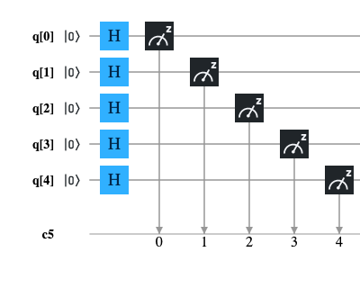
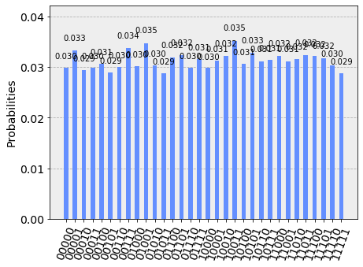

Random Numbers Generation
Generating random numbers on a quantum computer is not difficult because the unpredictability of measure of a qubit in a state of superposition it is in fact a form of natural randomness. Translating this idea into code is relatively simple: taking n qubits (therefore the random number obtained from each execution will be an integer from 0 to 2n - 1) with initial state equals to $|0\rangle$, the quantum Hadamard gate is applied to each of the n qubits and finally the measurement is performed. The quantum Hadamard gate applied to a qubit in $|0\rangle$ state brings it in superposition state: $$\frac{|0\rangle + |1\rangle}{\sqrt{2}}$$ and this means that the measure will have the probability of 50% to be equal to 0 and 50% to be equal to 1.
Circuit diagram
Considering that a quantum computer with 5 qubits is available, the circuit diagram that achieves the above is the following:

QASM code
The following program is the translation in QASM language of the circuit illustrated above; this program has been tested both on IBM's quantum computer 'ibmq_london' and on the IBM 'qasm_simulator' simulator.
OPENQASM 2.0;
include "qelib1.inc";
qreg q[5];
creg c[5];
h q[0];
h q[1];
h q[2];
h q[3];
h q[4];
measure q[0] -> c[0];
measure q[1] -> c[1];
measure q[2] -> c[2];
measure q[3] -> c[3];
measure q[4] -> c[4];Python with Qiskit code
The following program is the translation in Python with Qiskit of the circuit shown above; this program was tested inside a Jupyter Notebook using as backend both IBM's quantum computer 'ibmq_london' and IBM's 'qasm_simulator' simulator.
q = QuantumRegister(5, 'q')
c = ClassicalRegister(5, 'c')
circuit = QuantumCircuit(q, c)
circuit.h(q[0])
circuit.h(q[1])
circuit.h(q[2])
circuit.h(q[3])
circuit.h(q[4])
circuit.measure(q, c)Microsoft Q# .NET Core code for quantum simulator
The following program is the Microsoft Q# translation of the circuit shown above; this program has been tested on a Linux with .NET Core, Q# runtime and Microsoft quantum simulator installed.
namespace ComputationalMindset.QuantumExperiments
open Microsoft.Quantum.Intrinsic;
open Microsoft.Quantum.Canon;
open Microsoft.Quantum.Measurement;
operation RandomNumberGenerator() : (Result, Result, Result, Result, Result)
{
using (q = Qubit[5])
{
H(q[0]);
H(q[1]);
H(q[2]);
H(q[3]);
H(q[4]);
let result = (M(q[0]), M(q[1]), M(q[2]), M(q[3]), M(q[4]));
ResetAll(q);
return result;
}
}
Results on IBM Q Experience
Both programs for IBM Q Experience were executed with a number of shots equals to 8192 both on the IBM's simulator 'qasm_simulator' and on the real computer IBM's 'ibmq_london' obtaining the expected result, ie a uniform distribution of all 5-bit combinations.
The imperfect uniformity shown in the case of real quantum computers compared to simulators is due to noise.
Note: Given the stochastic nature of this code, your specific reults may vary. Consider running the example a few times.

QASM program execution result on IBM simulator 'qasm_simulator' (first 20 combinations)

QASM program execution result on IBM real quantum computer 'ibmq_london' (first 20 combinations)

Python + Qiskit program execution result on IBM simulator 'qasm_simulator'

Python + Qiskit program execution result on IBM real quantum computer 'ibmq_london'
Results on Microsoft simulator
The execution of the Q# program for .NET Core produced the expected result, namely a uniform distribution of all 5 bits combinations.
Note: Given the stochastic nature of this code, your specific results may vary. Consider running the example a few times.
| Binary | Decimal | Count | Probability (%) |
|---|---|---|---|
| 00000 | 00 | 257 | 3.14% |
| 00001 | 01 | 265 | 3.24% |
| 00010 | 02 | 240 | 2.93% |
| 00011 | 03 | 255 | 3.11% |
| 00100 | 04 | 237 | 2.89% |
| 00101 | 05 | 265 | 3.24% |
| 00110 | 06 | 267 | 3.26% |
| 00111 | 07 | 255 | 3.11% |
| 01000 | 08 | 257 | 3.14% |
| 01001 | 09 | 256 | 3.13% |
| 01010 | 10 | 241 | 2.94% |
| 01011 | 11 | 246 | 3.00% |
| 01100 | 12 | 251 | 3.06% |
| 01101 | 13 | 264 | 3.22% |
| 01110 | 14 | 272 | 3.32% |
| 01111 | 15 | 265 | 3.24% |
| 10000 | 16 | 223 | 2.72% |
| 10001 | 17 | 244 | 2.98% |
| 10010 | 18 | 262 | 3.20% |
| 10011 | 19 | 245 | 2.99% |
| 10100 | 20 | 255 | 3.11% |
| 10101 | 21/td> | 248 | 3.03% |
| 10110 | 22 | 251 | 3.06% |
| 10111 | 23 | 256 | 3.13% |
| 11000 | 24 | 272 | 3.32% |
| 11001 | 25 | 267 | 3.26% |
| 11010 | 26 | 292 | 3.56% |
| 11011 | 27 | 227 | 2.77% |
| 11100 | 28 | 278 | 3.39% |
| 11101 | 29 | 262 | 3.20% |
| 11110 | 30 | 257 | 3.14% |
| 11111 | 31 | 260 | 3.17% |
| Totals: | 8192 | 100.00% | |
Q# program result on Linux with .NET Core and Microsoft quantum simulator
Media
Download of the complete code
The complete code is available at GitHub.
These materials are distributed under MIT license; feel free to use, share, fork and adapt these materials as you see fit.
Also please feel free to submit pull-requests and bug-reports to this GitHub repository or contact me on my social media channels available on the top right corner of this page.